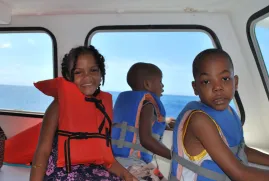
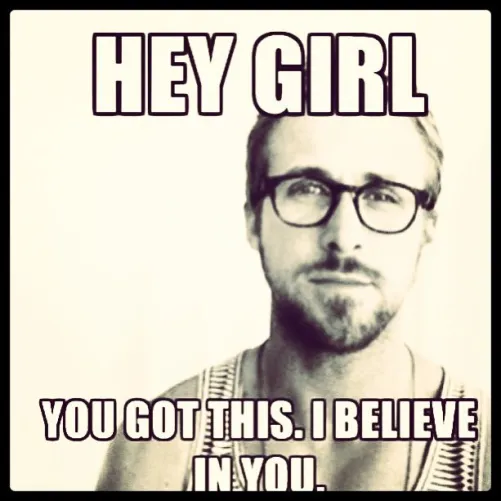
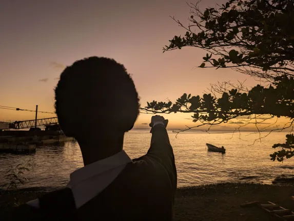
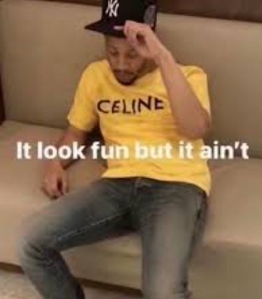
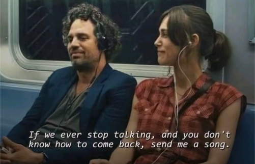
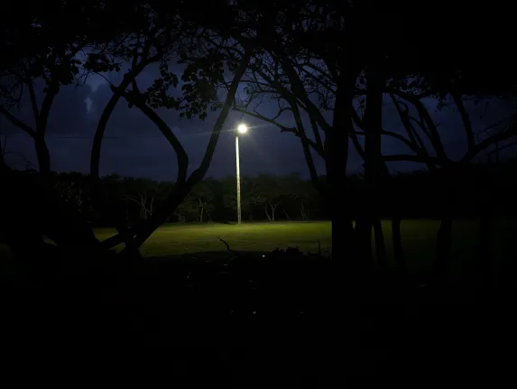
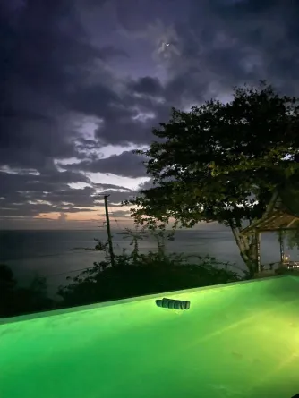
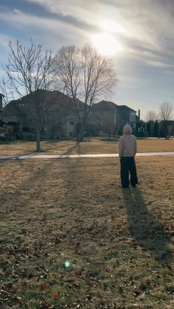

I'll try to keep the spelling mistakes to a minimum. This is going to be a long read
I'll try to be as Coherent as possible
Obviously privacy would be preferred I'm aware of the relationship you have with your parents and especially your mother . It may cause some trouble but I'm guessing it's alright. But you should know that this was meant for you. For Your Eyes Only. Though I'm writing some stuff that may go against a lot. I think if she where to find it maybe she would get at least some of what I'm trying to say in any case I apologize for any boundaries crossed or words I should not say
Well I may regret this whole letter. As per the lyrics of the song , This in its own way is my 'letter to Elise' ( No I've never seen the music video its probably bad, my point still stands and no I don't mean romantically, this is the first of many bad analogies) . As much as I would desire to give you a handwritten letter, so you know how much this means, that is a privilege I reserve for your future husband. So I can't swim in those waters. But as you know I had to do something so , I made a website. (Coded it myself actually with some help from Julian you can see the code if you want. It's a bit simple but I only had 2 weeks to learn )
In many ways this is a confession or declaration of whatever "this" was/is and what it means to me. As of the time I am writing this letter, we are on what I Would like to call a "haitius' an intermission or some form of bittersweet interlude. So I decided it best to condense what I won't have a chance to say during this time.
Before I start however as with most things so you don't get confused I must give a disclaimer. Firstly I harbor no romantic feelings towards you at the time of writing this letter as you know I have in the past, I have released all of those feelings through growth and prayer ( crazy idea anyway kind of stupid too but I would say we were not careful enough in the beginning) in any case this is not what this letter is about. Secondly everything this is the is the accumulation of some of what I've been meaning to say during all our times apart and even when we meet( what I could put into words anyway) . My hope as that I would finally express what I could never say to anyone and how it started with you and to clear up anything although I know that this may bring more questions. also to apologize for what I've cause by being in you life even what you'll never tell me.
Alright now about your gift. You know I wouldn't forget, I've been planning this for too long. I wanted to get you flowers just to compliment it but you know why I can't. I know, why even say it if it can't happen but I can dream(bad wordage, i have no idea what my thought process was) and I want to be transparent kinda maybe translucent in a way. I should probably also say I want give you so much more not even material cause I know u prefer the thought that goes into the gift. Know that I put alot of thought into it though in hindsight it may be kind of lackluster compared to what I thought it would be.
Don't feel pressured to give me anything back and don't even wonder about the price or go look for it ( reading this back, maybe it's my way I want to stay close to you in your circle or whatever idk I jus saying shate ). Looking back now I don't really like the other one either idk if it suits your style (your elevating and I can't bring the swag level back down) but maybe it's comfortable. The text Dios Por Delante roughly translates to God in front or God first. Hopefully it doesn't feed to much into your latina delusions or bring up confusion from you mother because of wrong translation. theres another one though I wanted to get but yeah I'd have to take a loan these people think cause they put Christian things on the clothes they can just inflate the price but anyway enough rant. As for the charms I really hope someone didn't have the same idea as me but I've been holding onto this since January after I messed up ur last gift .
Now to the meat and potatoes. This in many ways is a signifier of our first farewell. By farwell I mean a departure from what we ( me at least) where just getting acclimated to.
You were right, I do have alot on my plate. Now more than ever I am almost overwhelmed, seemingly sparked by the second incident on the 9th of March 2026.
In actuality I've been far from whelmed for a while now but this is only a testimony in the making and a challenge and greater challenges that I must face in my growth. I have come to terms with this fact for a while now, I am being prepared for something greater and I know at times my exhaustion may show and I may even breakdown, but I must keep moving forward. You of all people know we share the perfect peace and restoration of the Father so I know my efforts are not wasted. So once again, you are not and will never be a burden to me and at the very least, If there is to much on my plate right now I will make room or even better save the best ( you cause you da best) for last not pushing you away and neglecting but dealing with the other things while including you ( you can ask me about this bad analogy later) . I can't allow myself to enjoy your presence right now. And until I can stand in a room with you without feeling and awkward sense of dread or Melancholy I will have to keep my head down for a while.I apologize in advance. I will be the cause of some unease for a little while for a lot of people, well your good at blocking that out anyway. I look forward to hearing about your thoughts when this is over though I may have said to my mother that I would not visit your house again. It Suffices to say that I won't be fully here for a while emotionally or physically, mentally and socially. I do apologize again I will try my best to do my due diligence for all our responsibilities but my main focus and energies will be elsewhere at least until I deliver this letter but I do note that it may take a little longer for me to come back to earth than I plan to. I'm on the cusp of something I don't know what it is but I can feel it building I cant explain.
Will this lead to disaster? Whose to say but God alone, I can only hope that I stick to his path in this but I think this is my best course of action for now. It's already been some of the hardest few weeks ever for me but I've been plateauing for far too long and I've gotten too comfortable with the chaos. I hope I don't cause you too much greavance during this time all I ask is that you don't forget about me." All will be revealed " and I really am wishing that I'm not too late in delivering this to you. I say all this but it's taking more effort for me not to reach out or comment or talk much less smile at you ( lowkey hoping you would reach out first) but for the time being, I need to see if I could even try to live without you. Anyways enough about me it's all about You woman. I now pose this question to you. What to You want? What thoughts have You been thinking? What do You want us to be or want us to go ? what do You need from me? And have You gotten any clarity/word/answers?
I can't do it I refuse to just go back
I lied about When you told me you liked me and I said I did too. when I gave you the reason I did. I wasn't exactly truthful and what I said was just something basic about how you looked that night That night did have some part in it but it's more than that it's way more than that I could never be like that off of just a look, well I mean I could find you attractive but to develop feelings never. It was a collection of every moment we spent together and even apart. This again my be crossing some sort of line ( funny we just made that list) so Disclosure given (please refer to reason 1 at begining of letter)
It takes zero effort to point out someone's face. Knowing you, a refreshing glass of water, a golden girl that I always need to be careful of letting you take the place of the Father. The way you turn your head when you laugh, Your quick witted responses, the little giggle you do when your continuing a joke in a different voice or any voice you do (u still laughing btw idk how u doing both at the same time but it works for only you). Your endless facial expressions Or seeing a car that looks like the drivers face. I like when you notice something and don't react or say anything about it but take a mental note in your mind. Sometimes when I'm admiring some serene phenomenon e.i. the moon or sunset or just some naturaly occuring beauty, I think to myself " She would love this". As I write this section I sit under a full moon looking up and thinking are we looking together. Whenever I see something beautiful, I want to show it to you. Whenever something fun happens, I want to tell you about it, I just like being around you I can't lie. It all connects back to you, every single thing. I like the me I see in your eyes.
I truly admire watching you work. It's like watching a flame catch, even when you're trying to hide it it eminates from your person. Maybe you don't realize it, but that passion. That's one of the most beautiful things about you. I will always fall short of forming a description of how I truly feel as words are not enough. I always used to think that we were connected in some way, with you everything made sense(though I need to learn to just saying anything that comes to mind around you. I also want to apologize for all the times i've interrupted you or spoken over you or anything that I may have done that has pushed you down).
I just didn't want to sound like a creep or some wierdo but I truly feel that way. And now I leave.
I now realize almost all the things I loved about you romantically I can receive and appreciate platonically. Though presently its as if only you imagination right now or someone only in my thoughts and dreams like some mythical or endangered animal. I hear about you and I see you everywhere but I am as far away from you as I am close.
You look so strong [willed] and graceful [and bright] out there man, you never let stuff keep you down.And I know how hard that can be for you. You were always better at this than me, at least surface level. I continue to pray for the moments when you can't bare it. Resilience was actually your word that night at youth if you recall. Despite it all you still put on a smile.
Strangely, I grew more attached to you after I knew I didn't like you romantically. For so long I thought I knew you, I mean we basically grew up together. But In a lot of ways you where a total stranger to me. To me there is something miraculous about the way everything has played out over the last few months and how you broke down everything. I've never met someone who tried to speak my language and I do pray that you find someone fluent in you.
Your amazing ma'am, nothing about you was temporary to me, I would've spent the rest of my life learning you if I could.
Your warmth, your strength and your Yellow(Ever since that night in the office yellow has a different connotation to me, my mind was opened). I'm having so many original thoughts it's like you're fulfilling prophesy. I truly am blessed to have you in my life. I kept waiting for the day you would leave me, and the more the days passed, the more I let down my defences. I was tired of suppressing myself and I know that if I hadn't begun to open my heart in the way I did
I would regret it even more.That was Selfish of me and I once again apologize. I walked away that night in the car feeling the most defeated I have in years. There was nothing I could do. Nothing but cry out. And that's what I did.. Sometimes I will not lie I was actually delusional enough to think it would last forever.
I think I'm realizing that my thing is that I can't let go, I'm not good at it in any way right now . If I had left you alone on that night what would happen if I didn't continue pressing? Did you want me to keep pushing? Did you hope that I would continue and fight for it?for you?
When we first stopped, all i could think about was how you would feel now. I didn't want to leave you. This has now become one of my greatest regrets ; that I left you, that I became just another one you would have to supress. Sometimes I could feel you wavering and deciding wether to let me in deep down knowing that I was most likely not going to stay. Maybe you hoped I would. This truly does hurt my heart . I wanted to show you that things could change.
I then thought, now I'm alone again. Now I have a different thing that I'm not 100 percent on it yet but its slowly being revealed to me.
I once again apologize It would be unfair of me to keep being held back actually, all the strength you use to keep going would be wasted if I keep this pensive attitude up. So I choose the joy the Lord has blessed me with and leave my hurt behind at least for the time being I'll behave myself. I even thought you where about done with me actually and had moved on quik, I actually at first thought about it in a bad way, I once again ask for your forgiveness on this . It will take some time for me to do so please bear with me. It's been taking a considerable amount of energy to even form words farless communicate with people. I swear these past few months I've had more chest pain than a senior citizen. I feel like my whole reality has changed and now a door or world that I once had access to, I now can't dwell in. I don't think I will ever truly get over this or over you in general, though I look forward to it hurting less than it does now.
It would destroy me to watch you bare yourself to me to no avail, knowing that it would only be for a moment before we inevetabley go our separate ways. Hopefully it's within his plans for us to even be near to what we where. It hurts me to watch you deprive yourself of of the fulfillment that comes with opening your heart. You should know of course that the Lord is there for this purpose as well. So (for now at least) I'll cheer from afar. Not far enough to be gone. I can't bring myself to steer too far from you. Just far enough for you to reach out if you need me. I will miss the you that I was attached to but I'm even more interested in the you that is coming.
One day maybe ( this is a worst case scenario in my mind) you'll no longer be as excited to see me. And I won't cross your mind as often (I'm really hoping this is not the case) and the Me that you know now will just be a memory but maybe that's a good thing. I don't know I'm trying to make it easier for myself. I actually thought about moving away.
I don't want to get close with anyone else.
Fin







